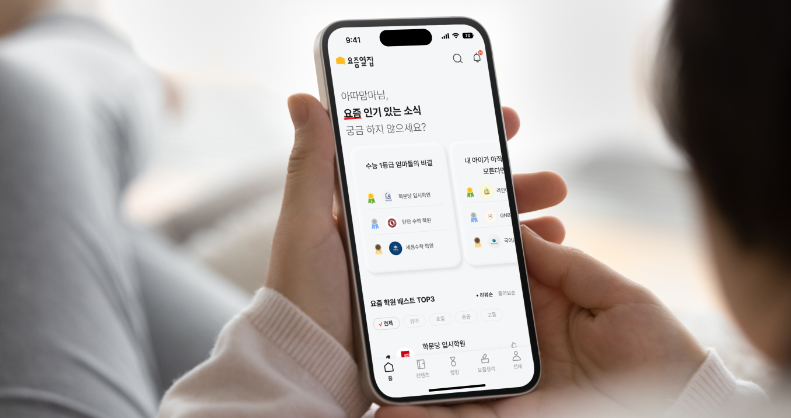

BBaroboda · Education Review Platform
Helping families choose education services through real experience reviews.
YZYZ turns parent and student reviews into service analysis reports, themed rankings, and practical education-service information.

Overview
YZYZ is an education information app that helps consumers understand services through stories from people who experienced them in the field. It covers subjects such as academies, home-visit education, English kindergartens, and digital learning.
The service provides review-based analysis reports, themed rankings, and direct consumer reviews from parents and students, helping users compare education services and make more informed choices.
| Area | Scope |
|---|---|
| Client | Baroboda |
| Product | YZYZ education review and ranking app |
| Role | Branding and UI/UX design |
| Service focus | Education-service reviews, analysis reports, themed rankings, and service comparison |